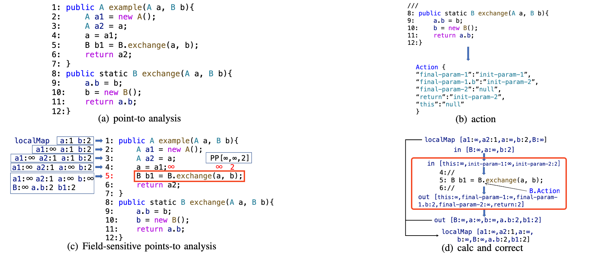
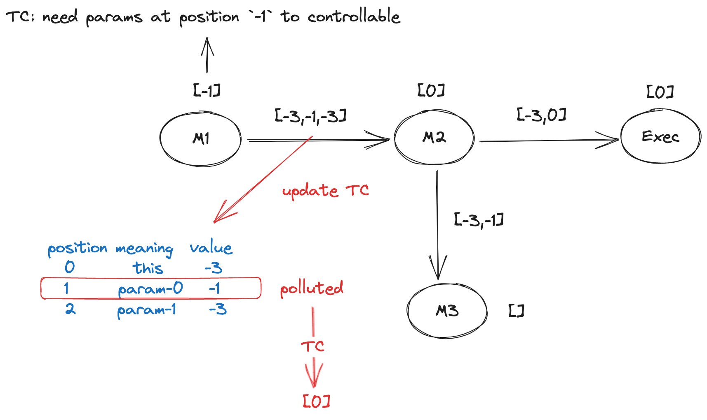

Workflow
Tabby 的整体工作流程如下：
- 构建
CPG『代码属性图』，该图从逻辑上由3类图组合而成，分别是ORG、PCG和MAG。ORG『对象关系图』：提取类的语义信息，构建类和方法直接的关系，边有3种HAS：某个类具有某个方法EXTEND：某个类继承了另一个类INTERFACE：某个类实现了某个接口
PCG『裁剪过的MCG「方法调用图」』：通过污点分析对MCG进行裁剪后的方法调用图，边有1种CALL：某个方法会调用另一个方法
MAG『方法别名图』：增加多态特性下方法直接的关系，边有1种ALIAS：某个方法是另一个方法的别名
- 通过
Controllability Points-to Analysis算法，裁剪MCG，同时在CALL边上存储PP（Polluted Position） 信息 - 将最终生成的图，存储在 Neo4j 数据库中
- 通过预先设定的
Sink和Sink关联的TC（Trigger Condition），使用Gadget Chains Finding算法，查找可用的利用链路径。
Algorithm
重点介绍使用的指针分析算法 Controllability Points-to Analysis 和查找利用链所用的 Gadget Chains Finding 算法。
ActionLocalMapPP
Action
为了记录方法执行后，参数和返回值的变化情况『可控性的变化』，为每个方法定义了一个 Action。Action 是一个键值对数组，其中 key 指代参数或返回值，value 表示参数和返回值在方法返回后的变化。key『不包含 null』 和 value 的取值范围如下
this：方法所属类对象this.x：方法所属类对象的成员xfinal-param-i：参数i的最终状态final-param-i.x：参数i的成员x的最终状态init-param-i：参数 i 的初始状态init-param-i.x：参数i的成员x的初始状态return：返回值的状态null：表示不可控
Action『被调用者』 的作用是为了辅助计算调用者自身的 Action，以及调用边的 PP
Controllability Points-to Analysis
下面来看具体的算法，
- 随意选择一个方法的
CFG『由soot生成』调用 进行计算 - 初始化结果集
results，为空 - 初始化变量集合
localMap，认为都可控- 遍历
CFG的Jimple Statement(stmt)，执行以下操作- 如果
stmt是一个返回语句- 根据当前的
localMap计算该方法的Action - 添加当前的结果『也就是上面计算得到的
Action』放入results中
- 根据当前的
- 否则，如果
stmt是一个方法调用语句『例如a = b.func(c)或者b.func(c)』，执行以下操作- 获取该被调方法的
- 如果
stmt是一个可控的方法调用，执行以下操作- 建立当前方法至被调方法的边，并计算
PP - 递归调用计算被调方法的
- 根据上一步得到的
Action和PP(简化表达后的in)，计算 - 根据上一步得到的
out，更新当前的localMap，计算
- 建立当前方法至被调方法的边，并计算
- 否则，执行
- 如果
- 遍历
- 返回
results
上面的算法中提及的一些内容需要进行补充说明。
首先先定义参数可控性的权重规则，需要量化它，在 localMap 和 PP 中会用到它们
- ：表示变量不可控
- ：表示变量来自
this或this的成员x - ：表示变量来自第
i个参数
下面对 localMap 和 PP 的含义进行说明，localMap 是用来存储 stmt 计算后的临时结果的，其中存储的具体内容是，整个方法涉及的所有变量它的可控性权重是多少；而 PP 只在涉及方法调用时才使用，它的含义表示被调方法的入参的可控性。
localMap 是包含键值对的数组，每一个键值对包含 key 和 value，key 表示某个变量，value 表示相应的权重。PP 的是一个数组『索引 0 表示 this，1 表示第一个参数，以此类推』，需要注意的是，上面的算法隐藏了一个细节，如果 PP 的中所有的 value 都为 那么就不会建立从当前方法至被调方法的边『CPG 中的 CALL 边』，但仍然会更新当前的 localMap，这样可以减少不必要的边，从而缓解后续通过图算法查找利用链的压力。
PP 的计算很简单，它是 localMap 的一个子集，直接从中根据参数的 key 提取即可。
而 的具体计算方法如下
理解起来就是，已经知道被调方法的 Action，也就是参数与可控性的映射关系；如果参数 x 的最终状态是 y，并且 PP 中存在 y 到 z 到映射，也就是 y 受 z 控制，即被调方法的入参 y 受调用者参数 z 的控制。
而由于被调方法，可能会使调用者中变量的可控性发生变化，为此需要进行修正 localMap， 的计算方法如下
最后的 用于计算其它 stmt 的情形下的 localMap，例如赋值语句，新建变量等，计算逻辑如下
a = b;：b的可控性传递给aa = new statement;：删除a原有的可控性，认为a不可控a.f = b;：b的可控性传递给a的成员fClass.field = b;：b的可控性传递给类的静态成员fielda = Class.field;：类的静态成员field的可控性传递给aa[i] = b;：b的可控性传递给a[i]a = b[i];：b[i]的可控性传递给aa = (T) b;：b的可控性传递给a
Example
下面来看一个上诉算法的示例，假设有如下代码
public A example(A a, B b){
A a1 = new A();
A a2 = a;
a = a1;
B b1 = B.exchange(a, b);
return a2;
}
public static B exchange(A a, B b){
a.b = b;
b = new B();
return a.b;
}在计算至 example 方法的第 5 行前，localMap 的变化如下
这里用
-1代替
public A example(A a, B b){ // localMap [a:1, b:2]
A a1 = new A(); // localMap [a:1, b:2, a1: -1]
A a2 = a; // localMap [a:1, b:2, a1: -1, a2: 1]
a = a1; // localMap [a:-1, b:2, a1: -1, a2: 1]
B b1 = B.exchange(a, b);
return a2;
}第 5 行，为方法调用语句 B b1 = B.exchange(a, b);，此时需要先计算方法 B.exchange 的 Action，首先计算 PP，调用 B.exchange 涉及的实参有两个，而 B.exchange 为静态方法，那么它的 this 变量是不需要的，
第 1 个实参对应变量 a，而 localMap 中 a 对应的 value 为 ；第 2 个参数对应变量 b 而 localMap 中 a 对应的 value 为 2，所以它的结果为
PP [-1, -1, 2]
再来看 exchange 方法的计算过程，localMap 的变化如下
public static B exchange(A a, B b){ // localMap [a:1, b:2]
a.b = b; // localMap [a:1, b:2， a.b:2]
b = new B(); // localMap [a:1, b:-1, a.b:2]
return a.b; // localMap [a:1, b:-1, a.b:2]
}最后根据 localMap 得到 exchange 方法的 Action
Action {
final-param-1: init-param-1,
final-param-1.b: init-param-2,
final-param-2: null,
return: init-param-2,
this: null
}
------
Action {
a: 1,
a.b: 2,
b: -1,
return: 2,
this: -1
}
现在回到 example 方法的第 5 行，已经有了 exchange 方法的 Action，PP 和当前的 localMap，那么可以计算第 5 行执行后的 localMap 了。首先根据 PP 和 exchange 方法的 Action 计算 out
Action {
final-param-1: init-param-1,
final-param-1.b: init-param-2,
final-param-2: null,
return: init-param-2,
this: null
}
in {
this: -1,
init-param-1: -1,
init-param-2: 2
}
得到的结果是
[a:-1, a.b:2, b:-1, b1: 2, B: -1]
计算过程如下
Action中有final-param-1-> init-param-1，in中有init-param-1:-1，所以得到final-param-1->-1，也就是a:-1Action中有final-param-1.b-> init-param-2，in中有init-param-2: 2，所以得到final-param-1.b-> 2，也就是a.b:2Action中有final-param-2-> null，in中没有null为key的映射关系，所以得到final-param-2->-1，也就是b:-1Action中有return-> init-param-2，所以得到b1-> 2，也就是b1:2Action中有this-> null，in中没有null为key的映射关系，所以得到this->-1，也就是B:-1
最后，对当前的 localMap 进行修正
localMap [a:-1, b:2, a1: -1, a2: 1]
out [a:-1, a.b:2, b:-1, b1: 2, B: -1]
取并集，如果 key 相等，使用 out 中的 value， 计算得到
localMap [a:-1, a.b:2, b:-1, b1:2, B:-1, a1: -1, a2: 1]
下图描述了这一过程

以上就是 Controllability Points-to Analysis 算法的计算过程了。
Finding
构建完整个 CPG 之后，在 CALL 边上，都会存储前面计算的 PP 属性。目的是帮助后续利用链的查找，那么具体是如何帮助的呢？
首先，根据先验知识，挑选了一部分 Sink『也就是一个方法节点』，并为每个 Sink 定义一个属性 TC（Trigger Condition）。有关这部分 Sink 的具体内容，可以查看 Tabby 中的 rules 文件夹。TC 是一个数组，表示，它需要哪些参数是可控的，才能触发这个 Sink。
查找过程从 Sink 开始，依次向上搜寻，分为两步 Expander 和 Evaluator，Expander 用于判断当前的边的 PP 是否符合当前 TC 的需要，从而确定是否往该方向搜索；Evaluator 会判断当前路径深度是否超过预设的值，超过即中止。
在搜索的过程中伴随着 的更新，需要计算 ，更新策略如下
理解起来就是，TC 需要哪些参数的可控性信息，就从 PP 中取出；如果遇到的是 ALIAS 边，则 。
Expander
Expander 的扩张算法如下：
- 从
Sink节点 开始搜索，定义 存储路径结果 - 调用 进行计算，，
TC为Sink的属性， 为邻接边的类型，CALL或者ALIAS。- 获取邻接的节点 ，
- 计算 的
- 如果 的类型为
- 如果 中有任何一个值是 ，那么就返回当前 和
- 否则，如果 的类型为
- 如果 的类型为
- 更新 ，
- 返回 和
Evaluator
Evaluator 的判断逻辑简单很多，主要判断路径深度
- 获取当前 ， 和路径深度 ，计算
- 获取路径对应的
- 如果 则
- 返回当前路径
- 否则，如果当前路径深度小于 ，则
- 返回 ，表示需要继续执行
Expander
- 返回 ，表示需要继续执行
- 否则
- 返回 ，中止执行
Expander
- 返回 ，中止执行
代码实现
一些差别，PP 中的数值定义发生变化：
-3：变量不可控-2：变量来源于sources，不清楚这个sources具体是值什么-1：变量来源于调用者本身0-n：变量来源于方法参数列表
对于一条 CALL 边上的 POLLUTED_POSITION: [-3,0,-3] 属性缓存的污点信息，它的含义如下
position value
0-this -3
1-param-0 0
2-param-1 -3
下标表示参数的位置，值表示该参数会调用者的哪个参数污染『或者说调用者的哪个参数的可控性会传递给它』。由此可知 this 参数和 param-1 不可控，而被调方法的第 1 个实参可被调用者的第 1 个形参污染。

如何利用生成的代码属性图
Tabby 生成的代码属性图实际上是由类关系图、函数别名图和精确的函数调用图组成的。它并不会直接输出类似利用链的联通路径，需要你使用相关的图查询语法进行查询而得出。
Tabby 生成的代码属性图支持两种模式，一是人工判断，二是编写污点分析的自动化利用脚本。首先，对于人工判断，利用图查询语言边查询，边人工对照具体代码来进行分析。这里其实工作量是比较大的，所以也提供了自动化的机制，然后，是自动化脚本的方式。Tabby 对每一条函数调用边 CALL，均计算了当前调用本身的可控性，具体参数为 CALL 边的 POLLUTED_POSITION。
举个例子，当 POLLUTED_POSITION 为 [0,-1,-3,1] 时，其中数组的 index 分别指向调用者本身、函数参数集等，数据的值指代的是当前受污点的变量指向
以当前例子来说明：
- 数组第一个位置指代的是当前函数的调用者本身的执行，当前为
0，0指代调用者来自函数参数 - 数组第二个位置指代的是调用函数的参数的第一个参数为
-1，-1指代类属性 - 数组第三个位置指代的是调用函数的参数的第二个参数为
-3，-3指代当前位置的变量不可控 - 数组第四个位置指代的是调用函数的参数的第三个参数为
1，1指代当前位置的变量来自函数参数的第 2 个
即数组内容
- -3 ⇒ 不可控
- -1 ⇒ 类属性
- 0-n ⇒ 函数参数的位置
利用这些信息，可以进行从底向上的污点分析。sink 函数处提供了先验知识，通过与调用边的 POLLUTED_POSITION 进行比较得出当前调用是否是可控的